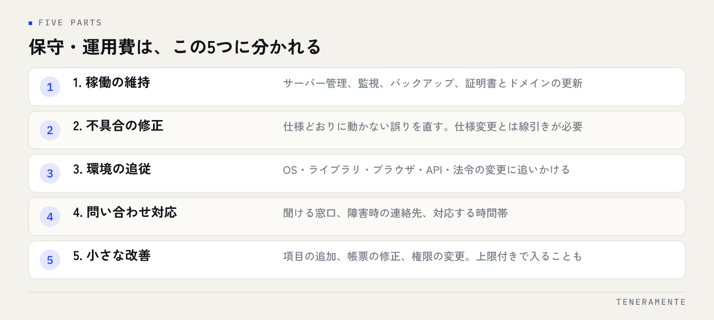

業務アプリの見積書に「月額保守費」と1行だけ書かれていて、何が含まれているのか分からない。結論から申し上げると、業務アプリの保守・運用費は金額よりも先に含まれる範囲を確かめるべき費用です。同じ月額でも、動かし続けるだけの契約と、変化に合わせて直し続ける契約では中身がまったく違います。この記事では、保守費の内訳を分けて、見積書と契約書のどこを見れば比べられるのかを整理します。
📌 この記事の結論
保守・運用費は「稼働の維持」「不具合の修正」「環境の追従」「問い合わせ対応」「小さな改善」の5つに分かれます。比べるときは月額の金額ではなく、この5つのどこまでが入っているかと、入っていない作業がいくらで頼めるかを確認してください。安い月額は多くの場合、後ろの2つが入っていません。
01保守・運用費が分かりにくいのは、中身が1つではないから
保守・運用費が不透明に感じられる理由は、料金の出し方が悪いからではありません。性質の違う作業が1つの名前でまとめられているからです。
たとえば、サーバーが落ちないように見ておく作業と、法令が変わったので帳票の様式を直す作業は、必要な技術も発生の頻度もまったく違います。前者は毎月決まった量の作業で、後者は起きるかどうか分からない作業です。この2つが「保守費」として1行にまとまっていると、月額が高いのか安いのかを判断する手がかりがありません。
もう一つの理由は、発注側が気にしているものと、提供側が月額に入れているものがずれやすいことです。発注側が心配しているのはたいてい「止まったときに誰が直すのか」と「あとで変えたくなったらどうなるのか」です。一方、月額の見積に自然に入るのは、毎月必ず発生する作業の分だけです。変更の相談は発生してから見積になることが多く、ここが説明されていないと「保守費を払っているのに別料金なのか」という受け取り方になります。
保守の話で最初に確認すべきなのは、金額ではなく境目の位置です。どこまでが月額で、どこから別の見積になるのか。開発費そのものの見方はWebアプリ開発費用の相場にも整理しています。
02保守・運用費に含まれるものを5つに分ける
保守費の中身を分けると、次の5つになります。この分け方で見積書を読み直すと、入っているものと入っていないものが見えます。

一つ目は、稼働の維持です。サーバーやクラウド環境の管理、死活の監視、バックアップの取得と保管、SSL証明書やドメインの更新。アプリが動き続けている状態を保つための作業で、毎月同じ量が発生します。
二つ目は、不具合の修正です。使っているうちに見つかる誤りを直す作業です。ここは「納品したものが仕様どおりに動いていない場合」と「仕様自体を変える場合」で扱いが変わるため、契約での線引きが必要になります。
三つ目は、環境の追従です。アプリは作ったあとも周りが変わります。サーバーのOSや言語、使っているライブラリの更新、ブラウザの仕様変更、連携先サービスのAPIの変更、法令や税率の改定。放っておくと、ある日突然動かなくなる種類のものです。保守費のうち、やめた瞬間にリスクになるのがこの環境の追従です。
四つ目は、問い合わせ対応です。操作が分からないときに聞ける窓口、障害が起きたときの連絡先と対応の時間帯、担当者が変わったときの説明。
五つ目は、小さな改善です。項目を1つ増やす、帳票のレイアウトを直す、権限を変える。業務が変われば必ず出てくる要望で、ここが月額に入っているかどうかで使い続けやすさが変わります。
03障害が起きたときだけの保守と、使い続けるための保守の違い
保守契約は、大きく2つの考え方に分かれます。見積の金額差は、ほとんどがこの違いから来ています。
一つは、守りの保守です。動いているものを止めないことを目的にし、稼働の維持と不具合の修正を範囲にします。月額は抑えられますが、業務が変わっても中身は変わりません。業務の流れが固まっていて、数年単位でやり方が変わらないアプリであれば、この形で足ります。
もう一つは、使い続けるための保守です。守りの範囲に加えて、環境の追従と小さな改善を定期的に入れていきます。月額は上がりますが、業務の変化に合わせてアプリの形も変わっていきます。使う人が増えていく予定があるアプリ、法令や様式に関わるアプリ、他のサービスと連携しているアプリは、こちらでないと数年で使えなくなります。
判断の目安は、そのアプリが業務のどこにあるかです。止まっても手作業で回せる範囲のものなら守りで足ります。止まると受注や請求が止まる位置にあるものは、環境の追従まで入った契約にしておくほうが安全です。保守の形は、アプリの重要度ではなく、止まったときに業務が止まるかどうかで決めます。
04月額に入りやすいものと、別途になりやすいもの
実際の見積では、同じ作業でも契約によって扱いが変わります。整理すると次のようになります。
| 作業の内容 | 月額に入りやすい | 別途の見積になりやすい |
|---|---|---|
| サーバー管理・監視・バックアップ | 入る | ー |
| 証明書・ドメインの更新 | 入る | ー |
| 仕様どおりに動いていない不具合の修正 | 入る | ー |
| ライブラリ・OSの更新 | 契約により分かれる | 大きな移行は別途 |
| 法令・税率の改定への対応 | 契約により分かれる | 様式の作り直しは別途 |
| 操作の問い合わせ対応 | 入る（時間帯の指定あり） | 時間外は別途 |
| 項目追加・帳票の修正などの小さな変更 | 時間や回数の上限付きで入ることがある | 上限を超えた分は別途 |
| 新しい画面・機能の追加 | ー | 別途 |
| 他システムとの新規連携 | ー | 別途 |
| 障害時の緊急対応（夜間・休日） | ー | 別途、または駆けつけの契約 |
この表の真ん中の列、「契約により分かれる」の行が、見積を比べるときに効く部分です。ここが入っていない契約は月額が下がりますが、数年後にまとまった費用が必要になります。
もう一つ見落としやすいのが、小さな変更の上限の単位です。月あたりの時間なのか、回数なのか、繰り越せるのか。繰り越せない契約では、変更の要望がない月の分は消えます。
05クラウドの利用料と外部サービスの料金は、保守費と分けて見る
保守費と混ざりやすいのが、動かすためにかかる実費です。これは保守の作業ではなく、使った分だけ外部に払うお金です。
代表的なものを挙げると、クラウドのサーバー利用料、データベースの利用料、ファイルの保管容量、通信量、メールやSMSの送信料、地図や郵便番号などの外部API、認証サービス、ドメインとSSL証明書。このうち、利用量で変わるものと固定のものが混ざります。
ここで確認しておくことが2つあります。1つは、契約が誰の名義になるかです。開発会社の名義でまとめて請求される形と、自社の名義で契約して請求は直接受ける形があります。後者のほうが乗り換えのときに動きやすく、料金の中身も見えます。もう1つは、利用量が増えたときに料金がどう上がるかです。利用者が増える、データが溜まる、ファイルを多く扱う。この3つはどれも実費を押し上げます。
保守費と実費を1つの月額にまとめた見積は、安く見えても比較ができません。見積をもらう段階で、作業の対価と外部への実費を分けて書いてもらうよう頼んでください。見積書全体の読み方はシステム開発の見積書の見方にも書いています。
06見積書と契約書で確認する項目
保守の契約で確認しておく項目を並べます。そのまま質問に使える形にしています。
- 月額に含まれる作業の範囲が、5つの区分のどこまでか文字で書かれているか
- 「不具合」と「仕様の変更」の線引きが契約書に書かれているか
- 小さな変更の上限（時間か回数か）と、繰り越しの有無
- 上限を超えた作業と、新規の開発の単価（時間単位か、都度見積か）
- 問い合わせの窓口と受付の時間帯、連絡の方法
- 障害が起きたときに、連絡を受けてから着手するまでの目安
- 夜間・休日の対応の扱いと、その場合の料金
- バックアップの頻度と保管期間、復旧の手順を誰が持っているか
- ライブラリやOSの更新を、誰がいつ判断するか
- クラウドなどの実費が、誰の名義の契約で、誰に請求されるか
- ソースコードと設計資料の権利と、引き渡しの条件
- 契約を終える場合の予告期間と、データの返却方法
このうち、最後の2つは契約時にしか決められません。開発が終わったあとに聞くと、交渉の材料がなくなります。
先に聞いておくと差が出る質問
「この保守契約を1年止めたら、何が起きますか」と聞いてみてください。止めても当面動くのか、更新が止まることで何が危ないのかを具体的に答えられる相手は、保守の中身を把握しています。詳しい答えが返ってこない場合は、月額の根拠も曖昧なままになっている可能性があります。
07よくある失敗とその避け方
保守の契約で起きやすい失敗は、だいたい次の形に収まります。
月額の安さだけで選んでしまう。環境の追従と小さな改善が入っていない契約は月額が下がります。入っていない作業は消えるのではなく、必要になった時点で見積になります。比べるときは、月額に年間の変更作業の想定を足した金額で並べてください。
変更の相談先が決まっていない。窓口が担当者個人の連絡先だけになっていると、その人が異動した時点で止まります。会社としての窓口と、記録の残る連絡方法を契約時に決めます。
保守を頼んでいるのに、中で何が起きているか分からない。報告がない契約では、払っている費用が作業に結びついているかを確認できません。月次か四半期ごとに、作業の内容と障害の有無を文字で受け取る形にしておきます。
作ったあとの改善を見込んでいない。業務アプリは公開した時点が完成ではなく、使い始めてから直す箇所が出ます。初期費用だけで予算を組むと、最初の数か月で必要になる修正の費用が出てきません。
ソースコードの扱いを決めていない。乗り換えや内製化を考えたときに、コードと設計資料を受け取れるかどうかで選べる道が変わります。公開後の数年をどう過ごすかは、契約書の数行で決まります。
08自分で保守を持つ場合と、専門家に任せる場合の分かれ目
保守を自社で持つという選択もあります。判断の基準を整理します。
自社で持ちやすいのは、使う人が少なく、外部との連携がなく、止まっても業務が手作業で回る範囲のアプリです。加えて、サーバーの設定とライブラリの更新を自分で追える人が社内にいて、その人が辞めても誰かが引き継げる状態になっていることが条件になります。この条件がそろうなら、外部に払う月額は不要です。
外部に任せたほうがよいのは、次のどれかに当てはまる場合です。アプリが止まると受注・請求・在庫のいずれかが止まる。個人情報や契約に関わるデータを扱っている。他のサービスと連携していて、相手側の変更に追従する必要がある。社内で追える人が1人しかいない。法令や様式の変更が業務に関わる。
中間の選び方もあります。日々の運用は自社で行い、環境の更新と障害時の対応だけを外部に置く形です。この場合は、どちらが何を見るかを文字で分けておかないと、障害のときにお互いが待つ状態になります。
判断の基準は、技術力の有無ではなく時間の持ち方です。更新の情報を追い、試して、直す時間を毎月確保できるかどうか。確保できないなら、外に置いたほうが結果として安く収まります。
09よくある質問
保守費は何を基準に決まるのですか？
保守契約を結ばない選択はできますか？
開発を頼んだ会社以外に保守を頼めますか？
月額に入る「小さな修正」はどの程度までですか？
保守費は値上げされることがありますか？
10まとめ：月額の金額ではなく、含まれる範囲で比べる
業務アプリの保守・運用費は、稼働の維持、不具合の修正、環境の追従、問い合わせ対応、小さな改善の5つに分かれます。見積を比べるときは、この5つのどこまでが月額に入っているか、入っていない作業はいくらで頼めるか、クラウドの実費は誰の名義で誰に請求されるか。この3点を確認すれば、金額の差が何の差なのかが分かります。
TENERAMENTEなら、業務アプリの開発費（初期費用）30万円〜・月額3万円〜（保守込み）で、月額にサーバー・保守・バックアップと1時間程度で終わる小さな修正（月1回まで）を含めた形でお引き受けしています。要件定義から運用まで同じチームが担当するため、公開後に「項目を1つ増やしたい」と相談するときも、業務の背景から説明し直す必要がありません。保守の範囲が文字で決まっていれば、毎月の費用が何に使われているかを気にせず、業務の改善だけを考えられるようになります。詳しい進め方は業務アプリ開発のご案内にまとめていますので、保守の範囲や見積の比べ方で迷われている場合は、お問い合わせからお気軽にご相談ください。